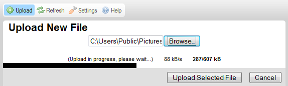

Przycisk Wyślij (Upload) dostępny w pasku narzędzi CKFindera otwiera panel przesyłania pliku, który można wykorzystać do dodania nowych plików do aktualnego folderu.
Poniższy rysunek prezentuje domyślny panel przesyłania pliku CKFindera, który otwiera się po kliknięciu przycisku paska narzędzi.
W celu zamknięcia (ukrycia) panelu przesyłania pliku należy nacisnąć przycisk Zamknij (Close) lub kliknąć ponownie przycisk Wyślij na pasku narzędzi.
Uwaga: Przesyłanie plików do serwera to termin techniczny oznaczający wysyłanie plików z lokalnego komputera do komputera centralnego (znanego również jako serwer).
Panel przesyłania pliku w CKFinderze występuje w dwóch wersjach, w zależności od środowiska, w jakim się pracuje. Domyślnie we wszystkich środowiskach obsługujących technologię Adobe Flash wykorzystywana jest opcja jednoczesnego przesyłania wielu plików (ang. multiple file upload), która pozwa wysłać większą liczbę plików do serwera w trakcie jednej operacji. Jeśli jednak Twój system nie obsługuje technologii Flash, będziesz mógł przesyłać pojedyncze pliki do serwera w odrębnych operacjach.
Powyższy rysunek prezentuje domyślny panel przesyłania pliku obsługujący jednoczesne wysyłanie wielu plików. W przypadku systemów nieobsługujących technologii Flash (w tym przeglądarek mobilnych) wykorzystany zostanie następujący format panelu.
Domyślnie CKFinder pozwala przesłać do serwera wiele plików jednocześnie. W celu wysłania plików do serwera należy wykonać kroki opisane poniżej.
Krok 1: Kliknij przycisk Wyślij (Upload) na pasku narzędzi w celu otwarcia panelu przesyłania pliku.
Krok 2: Po otwraciu panelu przesyłania pliku wybierz przycisk Dodaj pliki (Add Files). W oknie wyboru pliku Twojego systemu operacyjnego wskaż plik znajdujący się na Twoim komputerze, który chcesz przesłać do serwera.
Uwaga: Możesz wskazać dowolną liczbę plików jednocześnie, wybierając je wszystkie naraz w oknie wyboru pliku.
Krok 3: Lokalne pliki zostaną teraz dodane do kolejki przesyłanych plików. Jeśli chcesz dodać kolejne pliki do kolejki, kliknij ponownie przycisk Dodaj pliki (Add Files) i powtórz czynności opisane wyżej.

Krok 4: Jeśli zmienisz zdanie w kwestii tego, które pliki powinny być przesłane do serwera, możesz w dowolnym momencie albo usunąć pojedynczy plik z kolejki, klikając przycisk Usuń (Remove) obok jego nazwy, albo anulować cały proces przesyłania za pomocą kliknięcia przycisku Anuluj (Cancel) w panelu przesyłania pliku.
Krok 5: Jeśli zakończyłeś proces wyboru plików, możesz kliknąć przycisk Wyślij (Upload) w celu rozpoczęcia procesu przesyłania plików do serwera. Postęp całego procesu, a także poszczególnych plików, można obserwować na bieżąco na ekranie.

Krok 6: Poczekaj na zakończenie procesu przesyłania plików. Po jego zakończeniu zawartość folderu zostanie odświeżona, a ostatnio przesłany plik zostanie wybrany w panelu plików.
Jeśli technologia Adobe Flash nie jest obsługiwana w Twoim systemie, przesyłanie plików za pomocą CKFindera nadal będzie działało, choć będzie ograniczone do przesyłania jednego pliku jednorazowo. W celu przesłania pliku do serwera należy wykonać kroki opisane poniżej.
Krok 1: Kliknij przycisk Wyślij (Upload) na pasku narzędzi w celu otwarcia panelu przesyłania pliku.
Krok 2: Po otwarciu panelu przesyłania pliku wybierz przycisk Przeglądaj (Browse). W oknie wyboru pliku Twojego systemu operacyjnego wskaż plik znajdujący się na Twoim komputerze, który chcesz przesłać do serwera.
Uwaga: Podpis tego przycisku może się różnić w poszczególnych przeglądarkach internetowych.
Krok 3: Lokalny plik zostanie teraz wybrany. W tym wariancie możesz przesłać do serwera jeden plik jednocześnie.
Krok 4: Jeśli zakończyłeś proces wyboru pliku, możesz kliknąć przycisk Wyślij wybrany plik (Upload Selected File) w celu rozpoczęcia procesu przesyłania plików do serwera. Postęp całego procesu można obserwować na bieżąco na ekranie.

Krok 5: Poczekaj na zakończenie procesu przesyłania pliku. Po jego zakończeniu zawartość folderu zostanie odświeżona, a ostatnio przesłany plik zostanie wybrany w panelu plików.
Następujące komunikaty o błędach mogą zostać wyświetlone po wysłaniu pliku.
Komunikat ten wskazuje, że nazwa przesyłanego pliku jest już w użyciu przez inny plik znajdujący się w tym samym folderze. W celu uniknięcia konfliktu kolejny numer ("1") został dodany do oryginalnej nazwy pliku.
Plik, który próbowałeś przesłać do serwera, nie został zaakceptowany.
Najczęstszym powodem tej sytuacji jest takie skonfigurowanie CKFindera przez administratora, w którym dozwolone jest przesyłanie plików jedynie z wybranymi rozszerzeniami. Rozwiązanie to ma na celu zabezpieczenie serwera przed wysłaniem niedozwolonych plików. Innym powodem może być przekroczenie dozwolonego rozmiaru pliku przesyłanego do serwera. W takim przypadku serwer powinien zostać skonfigurowany przez administratora w taki sposób, aby dopuszczał pliki o większych rozmiarach.
Przesłany plik zawiera kod HTML. Z powodów bezpieczeństwa tylko pliki z wybranymi rozszerzeniami mogą zawierać kod HTML.
Prosimy o kontakt z administratorem w celu uzyskania informacji o plikach, które są akceptowane przez CKFindera, oraz o dopuszczalnym limicie rozmiaru pojedynczego pliku.